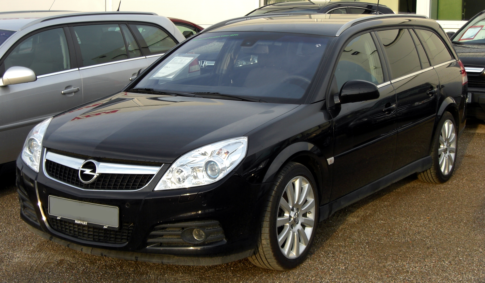
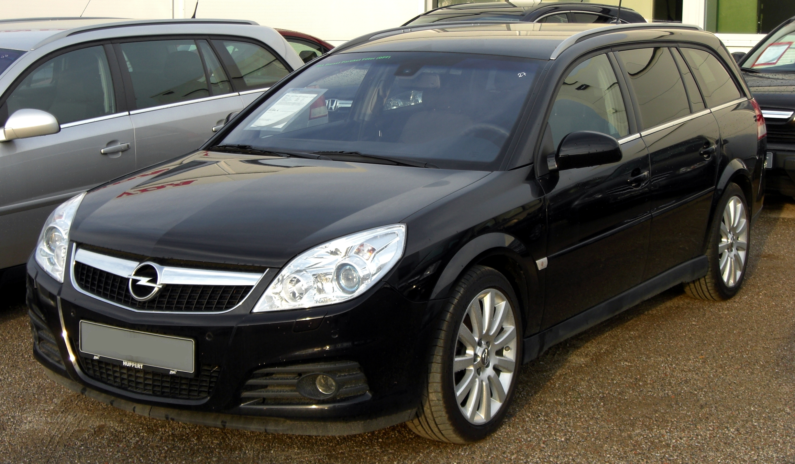

<Моя машинка :)
Люблю её всем сердцем
Здесь я буду рассказывать о своей "ласточке"
Ну что ж, начнем. Бип-бип!
Год выпуска этого замечательного автомобиля 2006 !
Самое прекрасное в ней - это неповторимый стиль и комфорт.
Двигатель
Автомобили комплектовались следующими двигателями: бензиновыми, с турбонаддувом и без,
объёмом 1,6 л (Z16XE, Z16XEP), 1,8 л (Z18XE, Z18XEL, Z18XER), 2,0 л (Z20NET),
2,2 л (Z22SE, Z22YH), 2,8 л (Z28NEL, Z28NET), 3,2 л (Z32SE),
а также дизельными с турбонаддувом объмом от 1,9 до 3,0 л (Z19DT, Z19DTL, Z19DTH, Y20DTH, Y22DTR, Z30DT, Y30DT).
Все двигатели соответствовали экологическим нормам Евро-3 или Евро-4.
Моя машина с бензиновым двигателем 1,8л. (Z18XER)
 

Кузов
С самого начала выпуска модели Vectra C имеет полностью оцинкованный кузов.
Виды кузова
- Лифтбек
- Седан
- Универсал
У меня седан )
Виды КПП
- Механическая КПП
- Автоматическая КПП
- Роботизированная КПП
У меня Механическая КПП )
Подробная информация на сайте Википедия